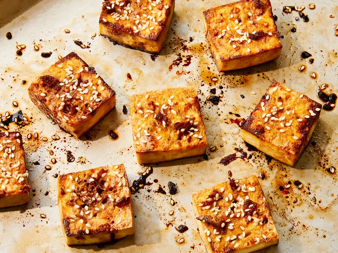

Airfryer tofu

Description
Easy and delicious sticky tofu in the airfryer :-)
- 1 package firm tofu
- 3 tbs sweet chili sauce
- 1 tbs japanese soy sauce
- 1.5 tbs roasted sesame oil
- 1 ts garlic powder
- sesame seeds
- spring onion to garnish
- Dry the tofu block with kitchen paper.
- Cut tofu into small cubes.
- Cut a piece of baking paper to cover the bottom of the airfryer.
- Add tofu cubes into the airfryer, cook in 180 degrees
for 12 mins. Shake couple of times during cooking.
- While tofu is cooking, mix soy, sesame oil, sweet chili sauce and
garlic powder together.
- After cooking, toss the tofu in the sauce and add back to the airfryer. Cook
additional 2 mins.
- Top with sesame seeds and spring onion. Serve with sticky white rice.
Home